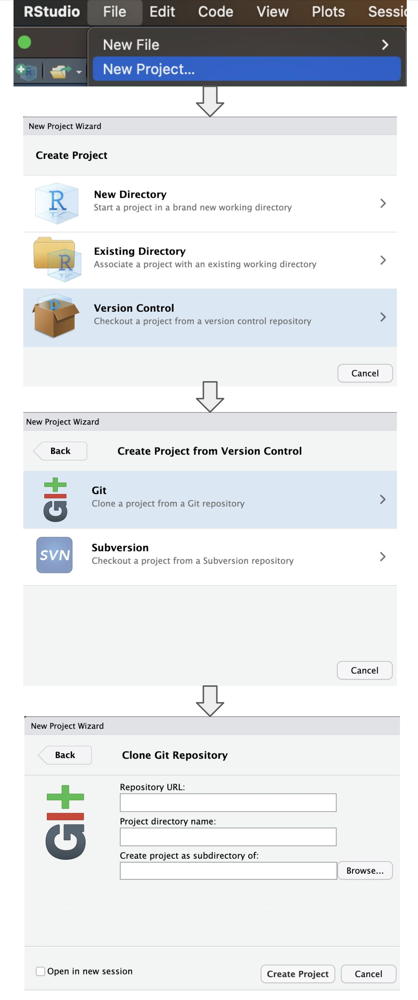

renv::restore(repos = "https://packagemanager.posit.co/cran/latest")Multiple imputation-propensity score workflows
Examples for multiple imputation and propensity score workflows
Miscellaneous multiple imputation and propensity score workflows
Background
Multiple imputation is a powerful tool in presence of missing data. However, especially in combination with propensity score analyses, multiple imputation can lead to challenges since analytic workflows can be become much more complex.
Objective
This repository showcases and evaluation different multiple imputation > propensity score > outcome analyses and associated implementation challenges.
Dependencies
This is a quarto book project and R package dependencies are managed through the renv package. All packages and their versions can be viewed in the lockfile renv.lock. All required packages and the appropriate versions can be installed by running the following command:
Important
The dependencies are managed through Posit’s repository package manager (RSPM). If you use a different operating system than macOS, please head over to the RSPM setup website and follow these steps to adjust the URL above.
Go to the RSPM setup website
Choose the operating system (if Linux, also choose the Linux distribution)
Go to
Repository URL:and copy-paste the URL to the options statement in the.Rprofilefileoptions(repos = c(REPO_NAME = “URL”))
Reproducibility
Follow these steps in RStudio to reproduce this study:
Note
- Clone this repository via
git clone <url>or in RStudio via File > New Project > Version Control > Git > then paste the link to repository URL - Install all necessary dependencies (see above)
- Add/adapt the paths to the datasets in
.Renviron - In RStudio, run all scripts via
quarto renderorBuild > Render Book(make sure quarto is installed)

The data used in this project is strictly simulated and no real patient-level data is used.
Repository structure and files
Directory overview
.
├── README.md
├── RStudio_init.png
├── _quarto.yml
├── chapters
│ ├── background.qmd
│ ├── images
│ ├── raking_weights.html
│ ├── raking_weights.html.md
│ ├── raking_weights.qmd
│ ├── raking_weights_files
│ ├── references.bib
│ ├── subgroup_analysis.html.md
│ ├── subgroup_analysis.md
│ ├── subgroup_analysis.qmd
│ ├── syvcox_coxph.html.md
│ ├── syvcox_coxph.md
│ ├── syvcox_coxph.qmd
│ └── syvcox_coxph_files
├── docs
├── functions
│ ├── covariate_vectors.R
│ └── subgroup.R
├── images
│ ├── leyrat_results.png
│ ├── mi_ps.png
│ ├── mice.png
│ ├── nejm_subgroup.jpg
│ ├── nejm_tbl1.png
│ └── workflow.png
├── index.qmd
├── index.rmarkdown
├── literature
│ ├── MatchThem_vignette.pdf
│ └── leyrat-et-al-2017-propensity-score-analysis-with-partially-observed-covariates-how-should-multiple-imputation-be-used.pdf
├── references.bib
├── renv
│ ├── activate.R
│ ├── library
│ ├── settings.json
│ └── staging
└── renv.lock